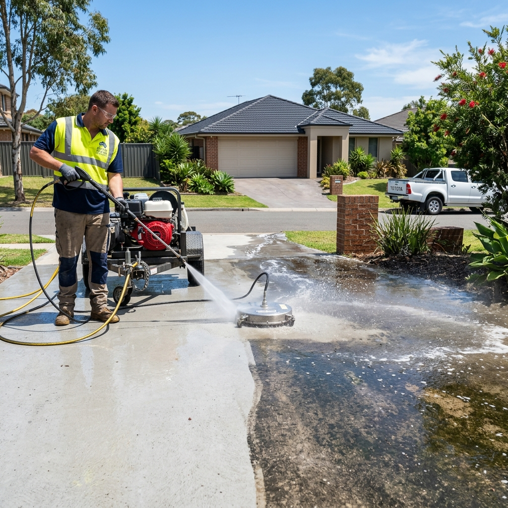
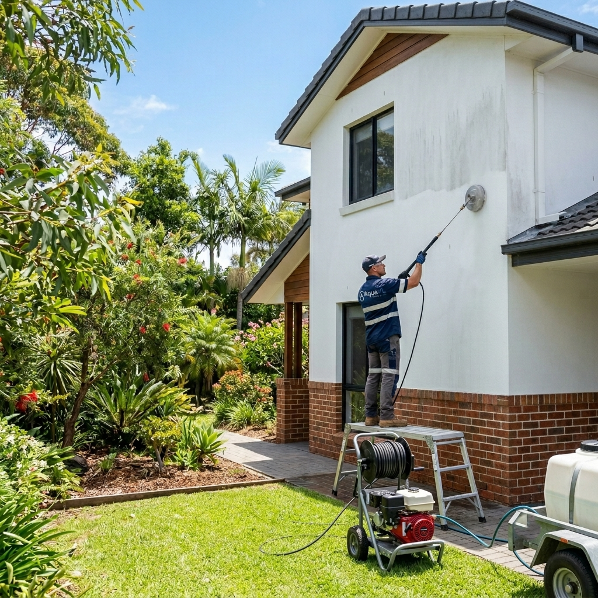
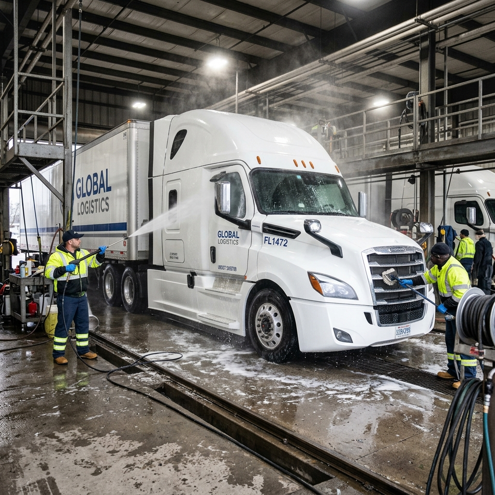
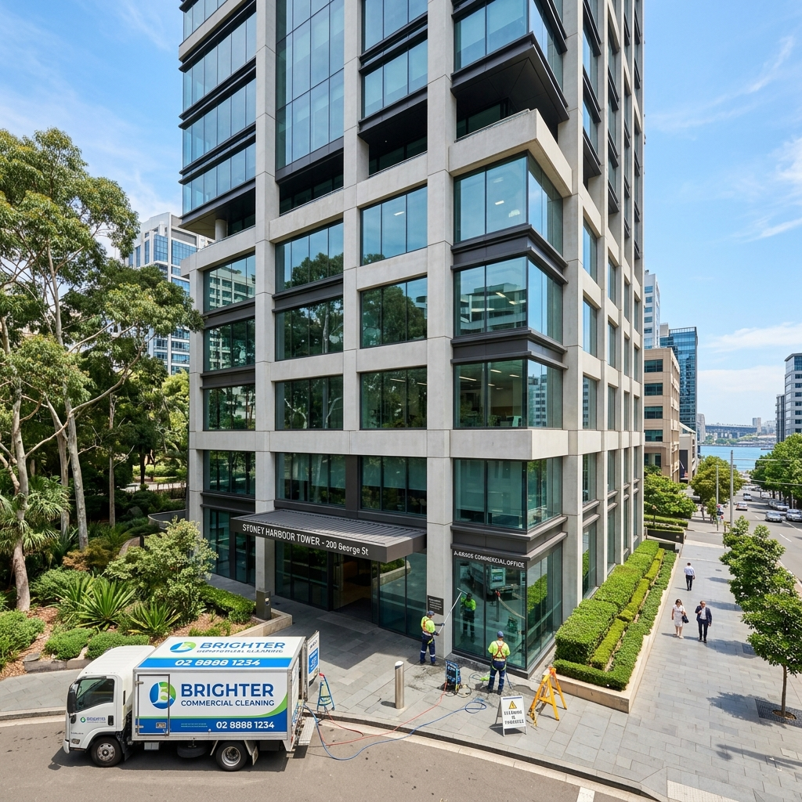

Professional Window
Cleaning Adelaide
Streak-free, crystal-clear windows using pure water technology. We service residential and commercial properties across Adelaide with results that last.
Crystal Clear Windows,
Every Time
Clean windows transform the look of any property — inside and out. Dirty, streaky glass dulls your home's appearance, reduces natural light, and makes a poor first impression on guests and customers alike.
AquaVL uses pure water technology and professional squeegee techniques to deliver a flawless finish on every pane. Our pure water system removes all minerals from the water before it touches your glass — meaning no detergent residue, no streaks, and windows that stay cleaner for longer. We clean frames, sills, tracks and glass as standard.
Book a Free QuotePure Water Tech
100% purified water leaves zero residue — perfectly streak-free.
Frames & Sills
Glass, frames, sills and tracks all cleaned as standard.
Multi-Storey
Water-fed poles reach multiple storeys safely from the ground.
Stays Cleaner Longer
No detergent residue means dirt takes longer to re-adhere.
Fully Insured
Public liability insurance on every job.
Free Quotes
No obligation estimates for residential and commercial.
How It Works
A simple, efficient process that delivers exceptional results every visit.
Free Quote & Property Assessment
We count and assess your windows, note any access requirements, and provide a clear, no-obligation quote — usually the same day you enquire.
Frame & Sill Pre-Wipe
Before applying water to the glass, we pre-wipe frames and sills to remove loose dirt and cobwebs, preventing them from transferring onto the clean glass during washing.
Pure Water Glass Wash
We apply purified water with a soft brush head and water-fed pole, agitating the glass surface to loosen and remove dirt, grime and environmental deposits from every pane.
Pure Water Rinse
A final pure water rinse removes all loosened dirt. Because the water is 100% mineral-free, it evaporates completely without leaving any marks, spots or residue on the glass.
Final Check & Completion
We inspect each window from multiple angles to ensure a perfectly clear, streak-free result. Any problem panes are re-cleaned until they meet our standard before we leave.
Residential & Commercial
We service all property types across Adelaide and surrounding suburbs.
Residential Homes
Single and double-storey homes cleaned inside and out. We handle all window types including aluminium frames, timber and uPVC.
Commercial Properties
Offices, retail shopfronts, restaurants and strata buildings. We offer scheduled maintenance programs with regular visit cycles.
Skylights & Roof Windows
Safe access and specialist cleaning for skylights, overhead glass panels and roof-mounted windows where safe to do so.
Frames, Tracks & Sills
All frame types, sliding door tracks and window sills cleaned as part of every standard service — no extra charges.
Common Questions
Everything you need to know about our window cleaning service.
Pure water cleaning uses water that has been filtered through a multi-stage purification process to remove all minerals and impurities. When applied to glass and rinsed off, it leaves no residue — meaning windows dry completely streak-free and stay cleaner for longer.
Pure water cleaned windows typically stay cleaner for longer than traditionally cleaned windows because there is no detergent residue left on the glass to attract dirt. Most residential properties benefit from a clean every 4 to 12 weeks, depending on location and exposure.
Yes. We use water-fed pole systems that allow us to safely clean windows up to several storeys high from the ground — no ladders required in most cases, which is safer and more efficient.
Pure water window cleaning can be performed in light rain and cooler conditions. We will advise if conditions are unsuitable and reschedule at no cost to you.
Yes. As standard, we clean window frames and sills along with the glass to ensure a complete, professional result.
Explore Our Other Services
We offer a full range of exterior cleaning solutions for Adelaide properties.

Driveway Cleaning
High-pressure washing that restores your driveway to like-new condition.
Learn more
Exterior House Washing
Soft-wash & pressure-wash for render, brick, weatherboard and cladding.
Learn more
Truck & Fleet Wash
Mobile truck and fleet washing services tailored to your schedule.
Learn more
Commercial Property Care
Full exterior maintenance packages for businesses & strata.
Learn moreReady for Crystal-Clear Windows?
Contact AquaVL today for a free, no-obligation quote. We service all Adelaide suburbs.